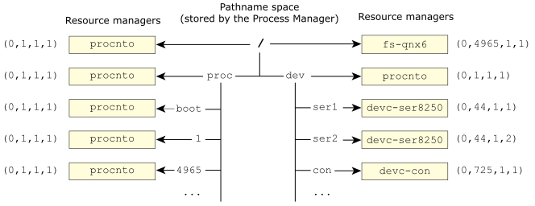

Notice how both fs-qnx6 and the process
manager have registered themselves as being responsible for
/
?
This is fine, and nothing to worry about.
In fact, there are times when it's a very good idea.
Let's consider one such case.
cachedon your system, but alas, the designers of the network filesystem didn't provide a way to do that. So, you write a pass-through filesystem (called fs-cache) that sits on top of the network filesystem. Here's how it looks from the client's point of view:
Both fs-nfs (the network filesystem) and your caching
filesystem (fs-cache) have registered themselves for the same
prefix, namely /nfs.
As we mentioned above, this is fine, normal, and legal under QNX OS.
Let's say that the system just started up and your caching filesystem
doesn't have anything in it yet.
A client program tries to open a file, let's say /nfs/home/rk/abc.txt.
Your caching filesystem is in front of
the network filesystem
(I'll show you how to do that later, when we discuss resource manager
implementation).
At this point, the client's open() code does the usual steps:
Whom should I talk to about the filename /nfs/home/rk/abc.txt?
Talk to fs-cache first, and then fs-nfs.
Notice here that the process manager returned two sets of ND/PID/CHID/handle; one for fs-cache and one for fs-nfs. This is critical.
Now, the client's open() continues:
I'd like to open the file /nfs/home/rk/abc.txt for read, please.
Sorry, I've never heard of this file.
At this point, the client's open() function is out of luck as far as the fs-cache resource manager is concerned. The file doesn't exist! However, the open() function knows that it got a list of two ND/PID/CHID/handle tuples, so it tries the second one next:
I'd like to open the file /nfs/home/rk/abc.txt for read, please.
Sure, no problem!
Now that the open() function has an EOK (the no problem
),
it returns the file descriptor.
The client then performs all further interactions with the fs-nfs resource manager.
resolveto a resource manager is during the open() call. This means that once we've successfully opened a particular resource manager, we will continue to use that resource manager for all calls that use that file descriptor.
So how does our fs-cache caching filesystem come into play? Well, eventually, let's say that the user is done reading the file (they've loaded it into a text editor). Now they want to write it out. The same steps happen, with an interesting twist:
Whom should I talk to about the filename /nfs/home/rk/abc.txt?
Talk to fs-cache first, and then fs-nfs.
I'd like to open the file /nfs/home/rk/abc.txt for write, please.
Sure, no problem.
Notice that this time, in step 3, we opened the file for write and not read as we did previously. It's not surprising, therefore, that fs-cache allowed the operation this time (in step 4).
Even more interesting, observe what happens the next time we go to read the file:
Whom should I talk to about the filename /nfs/home/rk/abc.txt?
Talk to fs-cache first, and then fs-nfs.
I'd like to open the file /nfs/home/rk/abc.txt for read, please.
Sure, no problem.
Sure enough, the caching filesystem handled the request for the read this time (in step 4)!
Now, we've left out a few details, but these aren't important to getting across
the basic ideas.
Obviously, the caching filesystem will need some way of sending the data across
the network to the real
storage medium.
It should also have some way of verifying that no one else modified the file
just before it returns the file contents to the client (so that the client doesn't
get stale data).
The caching filesystem could handle the first read request
itself, by loading the data from the network filesystem on the first
read into its cache.
And so on.
A slight terminology digression is in order. The primary difference between a Unioned File System (UFS) and a Unioned Mount Point (UMP) is that the UFS is based on a per-file organization, while the UMP is based on a per-mountpoint organization.
In the above cache filesystem example, we showed a UFS, because no matter how
deep the file was in the tree structure, either resource manager was
able to service it.
In our example, consider another resource manager (let's call it foobar
) taking over
/nfs/other.
In a UFS system, the fs-cache process would be able
to cache files from that as well, just by attaching to /nfs.
In a UMP implementation, which is the default in QNX OS since it does longest prefix match,
only the foobar resource manager would get the open requests.